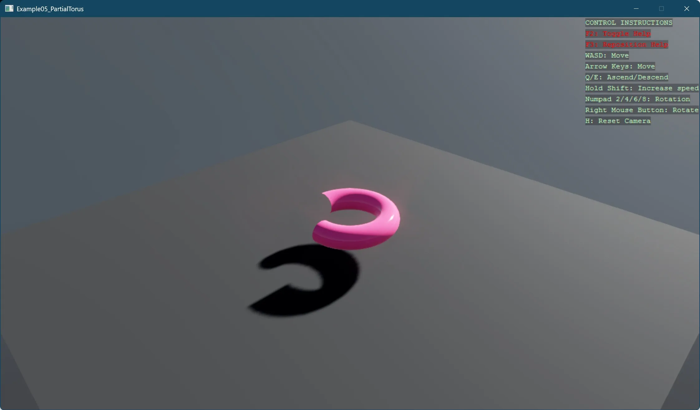

Partial torus mesh
This example demonstrates creating a 3D partial torus mesh programmatically by breaking down the process into clear, distinct steps:
- Setting up a basic 3D scene with a skybox
- Creating a parametrically defined torus geometry using mathematical formulas
- Demonstrating how to generate a partial (incomplete) torus by constraining the bend angle
- Building structured 3D mesh generation with proper vertex positioning and normal definitions
The example showcases important 3D graphics concepts including:
- Parametric surface generation using two angle parameters (circumference and bend)
- Correct normal calculation for accurate lighting and shading
- Triangle winding order for proper face orientation
- Vertex indexing to efficiently reuse vertices between adjacent triangles

For more details of MeshBuilder, refer to our MeshBuilder manual.
Tip
Notice the effect of back-face culling when moving the camera around the objects. With the default culling mode enabled, back faces are not rendered, optimizing performance by avoiding the drawing of surfaces that are not visible to the camera.
For open or partially open 3D models, viewing from inside or even from outside through an open area may cause the model to appear incomplete. This is normal behavior since back-face culling intentionally omits surfaces facing away from the camera.
Note
This example requires the additional NuGet packages Stride.CommunityToolkit.Skyboxes and Stride.CommunityToolkit.Bepu. Make sure to install both before running the code.
View on GitHub.
open Stride.CommunityToolkit.Bepu;
open Stride.CommunityToolkit.Engine;
open Stride.CommunityToolkit.Skyboxes;
open Stride.Core.Mathematics;
open Stride.Engine;
open Stride.CommunityToolkit.Rendering.Utilities
open Stride.Graphics
open System
open Stride.Rendering
open Stride.Rendering.Materials
open Stride.Rendering.Materials.ComputeColors
let game = new Game()
let CreateMaterial (game: Game) : Material =
Material.New(
game.GraphicsDevice,
MaterialDescriptor(
Attributes = MaterialAttributes(
MicroSurface = MaterialGlossinessMapFeature(GlossinessMap = ComputeFloat(0.9f)),
Diffuse = MaterialDiffuseMapFeature(DiffuseMap = ComputeColor(Color4(1.0f, 0.3f, 0.5f, 1.0f))),
DiffuseModel = MaterialDiffuseLambertModelFeature(),
Specular = MaterialMetalnessMapFeature(MetalnessMap = ComputeFloat(0.0f)),
SpecularModel = MaterialSpecularMicrofacetModelFeature(
Environment = MaterialSpecularMicrofacetEnvironmentGGXPolynomial()
)
)
)
)
let CreateMeshEntity (graphicsDevice:GraphicsDevice) (scene:Scene) (position:Vector3) (build:MeshBuilder -> unit) =
use meshBuilder = new MeshBuilder()
build(meshBuilder)
let model = new Model()
model.Add(MaterialInstance(Material = CreateMaterial(game)))
model.Add(Mesh(
Draw = meshBuilder.ToMeshDraw(graphicsDevice),
MaterialIndex = 0
))
let entity = new Entity()
entity.Scene <- scene
entity.Transform.Position <- position
entity.Add(ModelComponent(Model = model))
entity
let BuildPartialTorusMesh (meshBuilder:MeshBuilder) cylinderRadius torusAngle bendRadius circumferenceStepsCount bendSegmentSteps =
//for partial torus up to 360 degrees (tAngle in degrees)
meshBuilder.WithIndexType(IndexingType.Int16) |> ignore
meshBuilder.WithPrimitiveType(PrimitiveType.TriangleList) |> ignore
let position = meshBuilder.WithPosition<Vector3>()
let normal = meshBuilder.WithNormal<Vector3>()
//vertices
for j in 0..bendSegmentSteps do
//Torus angle position Phi starts at 0 in line with Z-axis and increases to Pi/2 at X-axis
let tPhi = (float j) * torusAngle / (float bendSegmentSteps) * Math.PI / 180.0
let xc = bendRadius * Math.Sin(tPhi)
let zc = bendRadius * Math.Cos(tPhi)
for i in 0..(circumferenceStepsCount - 1) do
//circumference angle tTheta
let tTheta = float i * Math.Tau / float circumferenceStepsCount
let yr = cylinderRadius * Math.Sin(tTheta)
let xr = cylinderRadius * Math.Cos(tTheta) * Math.Sin(tPhi)
let zr = cylinderRadius * Math.Cos(tTheta) * Math.Cos(tPhi)
let tNorm = Vector3(float32 xr, float32 yr, float32 zr)
let tPos = Vector3(float32 (xc + xr), float32 yr, float32 (zc + zr))
meshBuilder.AddVertex() |> ignore
meshBuilder.SetElement(position, tPos)
meshBuilder.SetElement(normal, tNorm)
//triangle eles
for j in 0..(bendSegmentSteps - 1) do
for i in 0..(circumferenceStepsCount - 1) do
let i_tot = i + j * circumferenceStepsCount
//build triangles
let i_next = (i + 1) % circumferenceStepsCount + j * circumferenceStepsCount
//triangle 1
meshBuilder.AddIndex(i_tot)
meshBuilder.AddIndex(i_next + circumferenceStepsCount)
meshBuilder.AddIndex(i_tot + circumferenceStepsCount)
//triangle 2
meshBuilder.AddIndex(i_tot)
meshBuilder.AddIndex(i_next)
meshBuilder.AddIndex(i_next + circumferenceStepsCount)
let Start rootScene =
game.SetupBase3DScene()
game.AddSkybox() |> ignore
game.AddProfiler() |> ignore
// Torus parameters
let cylinderRadius = 0.3f
let torusAngle = 270.0f
let bendRadius = 1.0f
let circumferenceStepsCount = 20
let bendSegmentSteps = 40
// Create torus mesh entity
CreateMeshEntity
game.GraphicsDevice
rootScene
(Vector3(0.0f, 1.0f, 0.0f))
(fun b -> BuildPartialTorusMesh b (float cylinderRadius) (float torusAngle) (float bendRadius) circumferenceStepsCount bendSegmentSteps)
|> ignore
[<EntryPoint>]
let main argv =
game.Run(start = Start)
0